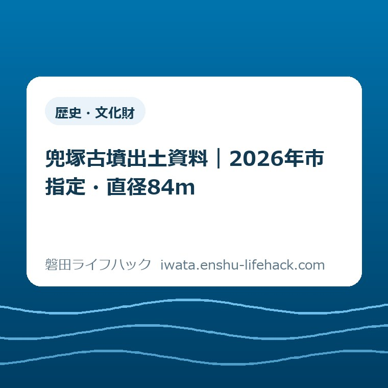

歴史・文化財
兜塚古墳出土資料｜2026年市指定・直径84m

この記事の要点
Q. 兜塚古墳の何が市指定になり、直径84mは何を示す？
A. 2026年8月21日に磐田市指定の有形文化財となったのは、古墳そのものではなく出土資料です。銅鏡、玉類、鉄刀、埴輪からなり、直径約84mに復元される5世紀初めの円墳の築造時期と、磐田原台地西南部の首長墓を知る手掛かりです。
結論——指定されたのは古墳ではなく出土資料
兜塚古墳をめぐる2026年8月21日の新しい市指定は、「兜塚古墳出土資料」が対象です。かぶと塚公園にある古墳そのものを、今回新しく指定したという発表ではありません。
磐田市公式ページが示す区分は、有形文化財の考古資料です。所在地欄は見付、所有者欄は磐田市となっています。
出土資料は、銅鏡、玉類、鉄刀、埴輪で構成されます。市は、5世紀初めの築造時期と、磐田原台地西南部の首長墓を理解する資料だと説明しています。
直径約84mは、測量調査を基に復元した築造時の円墳の大きさです。現在残る小山の見た目だけから測った幅ではありません。
最初に押さえるべき点は、指定対象、復元規模、公開状況の三つです。文化財の価値と、今日見に行けるかどうかは別に確認します。
この記事は、磐田市の市指定文化財ページと「いわた文化財だより第254号」などを、2026年9月9日に照合して作りました。
出土資料の常設展示場所は、市指定文化財ページに記載がありません。見学を予定する方は、最後に磐田市公式ページか文化財課で確認してください。
2026年8月21日に何が指定されたのか
磐田市の「市指定文化財」は、兜塚古墳出土資料の指定年月日を令和8年8月21日と掲載しています。西暦では2026年8月21日です。
正式名称は「兜塚古墳出土資料」です。「兜塚古墳」だけで止めると、墳丘そのものが今回の指定対象だと誤解しやすくなります。
種別は考古資料です。建造物や史跡の欄ではなく、有形文化財の考古資料として掲載されています。
指定ページの内容欄には、銅鏡、玉類、鉄刀、埴輪という四つのまとまりが示されています。指定資料全体の総点数は、同ページに書かれていません。
点数を知りたいときは、分かる範囲だけを分けます。文化財だよりで確認できるのは、銅鏡1面、玉類計50点、鉄刀2振以上です。
埴輪は円筒埴輪片と説明されています。ただし、破片の総数を推測して「全部で何点」と足し算することはできません。
市指定の事実は、2026年8月21日更新の磐田市「市指定文化財」で確認できます。検索結果の短い要約ではなく、指定年月日と名称を一緒に見ます。
指定対象を正確に呼ぶことは、細かな言葉尻の話ではありません。公園で見えるものと、収蔵される資料を分けるための出発点です。

直径約84mは「今見える幅」ではない
兜塚古墳の直径約84mは、磐田市文化財課が測量調査を基に築造時の姿を復元した数字です。本来の高さは約8mと推定されています。
2026年5月1日発行の「いわた文化財だより第254号」は、兜塚古墳を円墳としています。名古屋市の八幡山古墳と並ぶ、東海地方最大級の規模です。
同じ資料では、古墳時代中期前葉の円墳として遠江地方最大と説明されています。年代の目安は約1600年前です。
84mを生活の距離に直すと、100m走の距離の84％です。中心を通って端から反対側へ渡る想定なら、短い住宅地の一区画という感覚では収まりません。
円として外周を単純計算すると約264mです。ただし、築造時の形を円に置き換えた計算であり、現在歩ける園路の距離ではありません。
数字の大きさだけを、公園で見える土の盛り上がりへ重ねると戸惑います。墳丘は戦中と戦後にも手が加わり、築造時の全体がそのまま残っているわけではありません。
文化財だよりは、墳丘上に戦時中の鉄塔が建ち、戦後には一部へ学生会館が建てられたと記録しています。学生会館は現在撤去されています。
「小山に見えるのに84mもあるのか」という感覚は間違いではありません。見た目と復元値の差に、古墳がたどった時間が表れています。
直径84mという一つの数字は、盛土の寸法だけではありません。5世紀初めに、これだけの墓を築ける力が見付周辺にあったことを考える入口です。
銅鏡1面・玉類50点・鉄刀2振以上・埴輪片
兜塚古墳の出土資料は、銅鏡1面、玉類計50点、鉄刀2振以上、円筒埴輪片という組合せで確認できます。四種類を一緒に見ることで、年代と被葬者像の両方へ近づけます。
銅鏡は三神三獣鏡で、直径20.1cmです。鏡の裏面に、中国の伝説上の神と霊獣が三体ずつ表現されています。
市の説明では中国製ではなく、日本国内で作られた大型の鏡です。近畿地方を中心とするヤマト政権から得たものと考えられています。
玉類は、勾玉、棗玉、管玉など計50点です。文化財だよりの写真説明にはガラス玉も挙げられ、勾玉の一例は長さ3.5cmです。
勾玉には碧玉製のものが含まれます。磐田市は、その材質から被葬者の身分の高さがうかがえると説明しています。
鉄刀は2振以上です。「2振」と言い切らず「以上」まで残すのは、資料の状態を市の表現どおり伝えるためです。
円筒埴輪片は、古墳の周囲を巡る周溝から見つかりました。市は、埴輪などを築造時期の判断材料にしています。
銅鏡だけを取り出せば、珍しい品の紹介で終わります。玉類、鉄刀、埴輪と場所の記録が結び付くことで、誰の墓だったのかを考える資料になります。
資料全体の総点数は確認できません。玉類50点へ鏡と鉄刀を足し、埴輪片を1点として数えるのは正しくありません。
意外な事実は、鏡の豪華さより発見の経緯です。銅鏡などの副葬品は、戦時中に墳丘へ塹壕が掘られた際に見つかりました。

戦時中の発見から5回の発掘調査へ
兜塚古墳出土資料の背景には、戦時中の偶然の発見と、1979年から積み重ねた5回の発掘調査があります。一度の発掘だけで直径84mが決まったわけではありません。
戦時中、兜塚周辺には陸軍の部隊が置かれました。古墳の南側に本部が設けられ、墳丘上には鉄塔と監視所があったと市は記録しています。
墳丘へ塹壕を掘った際、銅鏡をはじめとする副葬品が見つかりました。文化財を探すための掘削ではなかった点が、この古墳の複雑な履歴です。
その際、埋葬施設に関わる石材や粘土は確認されなかったとされます。市は、木棺を直接地中に埋めた可能性を示しています。
第1次発掘調査は1979年です。その後を含めて5回の調査が行われ、墳丘の外側を取り巻く周溝が確認されました。
周溝から円筒埴輪片が出たことで、古墳の範囲と築造時期を考える材料が増えました。測量調査と出土遺物の再整理も、2026年の総合報告書につながっています。
住宅工事などで遺跡の範囲を確認する手順は、磐田市の埋蔵文化財届出を地番と地図から確認する記事に整理しています。兜塚古墳の解説とは目的が違うため、手続きを知りたい方だけ参照してください。
地中の資料は、出た瞬間だけで意味が決まりません。出土位置、周溝、過去の記録、再整理がそろい、古墳全体の読み直しが可能になります。
戦中の改変も戦後の建物も、古墳にとっては傷みの歴史です。同時に、その記録を隠さず示すことで、現在の姿と築造時の復元を分けて考えられます。
なぜ5世紀初めの首長墓と分かるのか
磐田市は、兜塚古墳を5世紀初めに築かれた首長墓と説明しています。根拠として、埴輪などの出土資料、古墳の規模、台地上の立地が示されています。
古墳は、磐田原台地西南部にある中泉丘陵の付け根の最高所に位置します。現在の住所感覚では、見付・一言のかぶと塚公園内です。
築造時には、遠州灘へつながる今之浦低地帯の潟湖を望めたと市は説明しています。奈良時代には「大の浦」と呼ばれた水辺です。
市は、被葬者を中泉丘陵一帯を基盤とした人物と考えています。大の浦周辺の水運を支配した大首長だった可能性も示しています。
ここは確定した氏名の紹介ではありません。市の資料も「考えられます」「大首長であったのでしょう」という推定の形です。
三神三獣鏡は国内製の大型品で、ヤマト政権とのつながりを考える材料です。碧玉製の勾玉は、被葬者の高い身分をうかがわせます。
大きな墳丘だけなら、誰がどの範囲と関係した人物かまでは分かりません。副葬品と地形を重ねることで、磐田原と水運の話がつながります。
逆に、副葬品だけを収蔵棚で見ても、直径84mの墳丘や今之浦を望む立地は伝わりにくくなります。古墳と出土資料は、説明の上では切り離せません。
1600年前という言葉を、ぼんやり古い話で終わらせない。見付の高台から水辺と人の動きを見ていた首長の墓だと置くと、現在の街との距離が縮まります。
良い点——出土資料を一まとまりで残した
兜塚古墳出土資料の市指定で評価したい点は、鏡だけでなく、玉類、鉄刀、埴輪を一つの古墳の資料として示したことです。
大型の三神三獣鏡は目を引きます。しかし、鏡一面の価値だけでは、円墳の築造時期や周溝の存在まで説明できません。
玉類50点と鉄刀2振以上は、被葬者の身分や外部との関係を考える材料です。円筒埴輪片は、古墳の年代と外周の構造を読む材料になります。
指定ページが、直径約84m、5世紀初め、磐田原台地西南部の首長墓という三点を短く示したことも良い点です。初めて読む市民が全体像をつかめます。
2026年には総合調査報告書も刊行されました。市の販売案内では紙版は完売ですが、デジタル版を閲覧できる外部サイトへの導線があります。
発掘から時間がたった資料を再整理し、測量結果と合わせて公表した意義は大きいと私は考えます。新発見は、掘った瞬間にだけ生まれるものではありません。
行政の発表だから持ち上げるのではなく、資料が市民の目で追える形になった部分を評価します。良い仕事は、良いと先に言います。
注文したい点——公開場所と見方の導線が足りない
兜塚古墳出土資料の市指定で注文したい点は、市指定文化財ページだけでは、資料をいつどこで見られるか分からないことです。
市指定ページを読むと、名称、指定日、年代、所在地、所有者、内容は確認できます。常設展示の有無、収蔵先、次の公開予定は掲載されていません。
2026年5月2日から7月26日まで、埋蔵文化財センターで出土遺物の展示がありました。2026年9月9日時点では、その会期は終了しています。
過去の展示記事を見つけても、現在見られるとは限りません。市指定ページから、公開中の展示か問い合わせ先へ一段で移れる導線があると助かります。
かぶと塚公園の施設ガイドには、体育施設の利用時間があります。ただし、その時間を古墳見学や出土資料の公開時間へ読み替えることはできません。
新しい指定は喜ばしい。でも、古墳そのものが指定されたように読めるなら、市民の手間は減っていない。私は、指定名称の直後に「指定対象は出土資料」と一行置いてほしいと思います。
公園で古墳を見た後、資料も見たい人は出てきます。その気持ちがあるうちに、公開場所と次回予定へ届く案内が要ります。
注文の相手は職員個人ではなく、情報の並べ方です。指定の価値を広く伝えるなら、知りたい人が迷わない入口まで整って初めて届きます。
大石の視点——公園の小山と資料を切り離さない
大石浩之（磐田市／不動産業）は、兜塚古墳を「公園の中の古い小山」で終わらせず、出土資料と地形を一緒に見るべきだと考えます。
私は考古学の専門家ではありません。だから、被葬者の氏名や勢力範囲を、市の説明より先まで断定することはできません。
私には迷いもあります。出土品を見られない日に公園へ行って、直径84mの価値が市民へ伝わるのか。現地表示の内容を確認していない以上、簡単に伝わるとは言い切れません。
一方で、見付4075-1の公園に古墳が残ることは強い入口です。住所を持つ現在の場所と、1600年前の首長墓が同じ地面でつながります。
行政は敵でも味方でもありません。調査、再整理、市指定は評価する。公開状況まで一画面で分からない点には、生活者として注文を出す。この順で見ます。
私は、兜塚古墳を訪ねた一場面をこの記事の根拠にはしていません。見ていない景色を「現地で感じた」と書かず、ここは公表資料を読んだ私の判断として線を引きます。
言い切ります。今回の指定の主役は、兜塚古墳そのものではなく出土資料です。ただし、その資料の意味は古墳の大きさと立地を抜きに読めません。
市民が払う手間は、公式ページを探し、漢字の指定名を読み、展示の有無を別に調べることです。その手間を認めた上で、今日できる確認を一つに絞ります。
現地と資料を見たいときの確認順
兜塚古墳の現地と出土資料を見たい方は、公園の場所、資料の公開状況、当日の利用条件を別々に確認します。
古墳があるのは、磐田市見付4075-1のかぶと塚公園内です。磐田市の施設ガイドでは、磐田警察署の東側、JR磐田駅から約2.2kmと案内されています。
公園には総合体育館、陸上競技場、弓道場、グラウンドがあります。古墳は総合体育館横の小山として紹介されています。
公園の体育施設には利用時間と休館日の記載があります。しかし、古墳の見学可能時間を同じだと断定せず、現地の掲示と公式案内に従います。
磐田市内の公園を別の目的から探す場合は、磐田市の公園を地区と目的から探す入口があります。兜塚古墳の指定内容を説明するページではありません。
出土資料の公開状況は、磐田市文化財課へ確認します。文化財課は埋蔵文化財センター内にあり、電話は0538-32-9699です。
埋蔵文化財センターは、市内の遺物を収蔵保管し、調査研究を行う施設です。1階に展示スペースがありますが、兜塚古墳出土資料の常設展示は確認できません。
現在見られる古墳関連展示を探す方は、中原B古墳群展の会期と行き方も確認できます。こちらは2026年10月25日までの別の展示です。
文化施設の開館日やアクセスを出発前にそろえる手順は、磐田市の文化施設を利用する前の確認項目にまとめています。
見付でもう一つ文化財を訪ねる候補には、旧見付学校の駐車場と見学順があります。同日に回る場合も、各施設の公開日を別々に確かめます。
対案・結論——今日は指定ページを一つ保存する
兜塚古墳出土資料を知った市民が今日できる一歩は、磐田市の市指定文化財ページを一つ保存し、指定対象の正式名称を家族へ共有することです。
共有する文は「2026年8月21日に、兜塚古墳から出た資料が市指定になった」で足ります。「兜塚古墳が市指定になった」と短くしないのが肝心です。
次に、直径84mは築造時の復元値だと添えます。現在の小山の幅や、歩ける道の長さを示す数字ではありません。
詳しく読みたい方は、2026年5月1日発行の文化財だより第254号を開きます。銅鏡、玉類、鉄刀、埴輪、調査経緯が2ページでつながります。
さらに調査記録へ進む場合、磐田市の文化財関連図書ページから、兜塚古墳総合調査報告書のデジタル版へ移れます。紙版は2026年9月9日時点で完売表示です。
現地へ行く日を今日決める必要はありません。まず指定対象と復元値を正しく知り、資料の公開状況が確認できた日に動けば十分です。
制度や公開条件は変わる場合があります。見学、資料の閲覧、問い合わせの個別条件は、出発前に磐田市公式ページで確認してください。
古墳と出土資料を分け、もう一度つなぎ直す。そうすると、兜塚公園の小山が、5世紀初めの磐田原と現在の見付を結ぶ場所として見えてきます。
よくある質問
兜塚古墳出土資料について、指定対象、直径約84mの意味、2026年9月9日時点の公開状況を答えます。
2026年8月21日に市指定になったのは兜塚古墳そのものですか？
今回の磐田市指定の対象は、兜塚古墳そのものではなく「兜塚古墳出土資料」です。区分は有形文化財の考古資料で、銅鏡、玉類、鉄刀、埴輪からなります。古墳の指定状況と混同せず、市公式ページの指定名称で確認してください。
兜塚古墳の直径約84mは、今見えている小山の幅ですか？
直径約84mは、磐田市文化財課が測量調査を基に復元した築造時の規模です。市は本来の高さを約8mと推定しています。現在見える墳丘だけを測った数字や、公園内の見学経路の長さではありません。
兜塚古墳出土資料は今すぐ見学できますか？
2026年9月9日に確認した市指定文化財ページには、常設展示の場所や公開時間がありません。2026年5月2日から7月26日までの展示は終了しています。見学目的なら、出発前に磐田市文化財課へ最新の公開状況を確認してください。
参考にした公式情報
- 市指定文化財／磐田市（ページ更新日2026年8月21日、2026年9月9日確認）
- いわた文化財だより第254号／磐田市（2026年5月1日発行、2026年9月9日確認）
- 施設ガイド かぶと塚公園／磐田市（ページ更新日2025年3月3日、2026年9月9日確認）
- 文化財関連図書の販売 発掘調査報告書／磐田市（ページ更新日2026年5月25日、2026年9月9日確認）
- 施設ガイド 埋蔵文化財センター／磐田市（ページ更新日2026年6月30日、2026年9月9日確認）

最終確認日：2026-09-09 ／ 本記事は公表情報と執筆者の見解を分けて記載しています。指定内容、調査上の解釈、展示や公開の状況は変わる場合があります。現地利用と資料閲覧の個別条件は文化財課へ確認し、最新・正確な情報は磐田市公式ページでご確認ください。